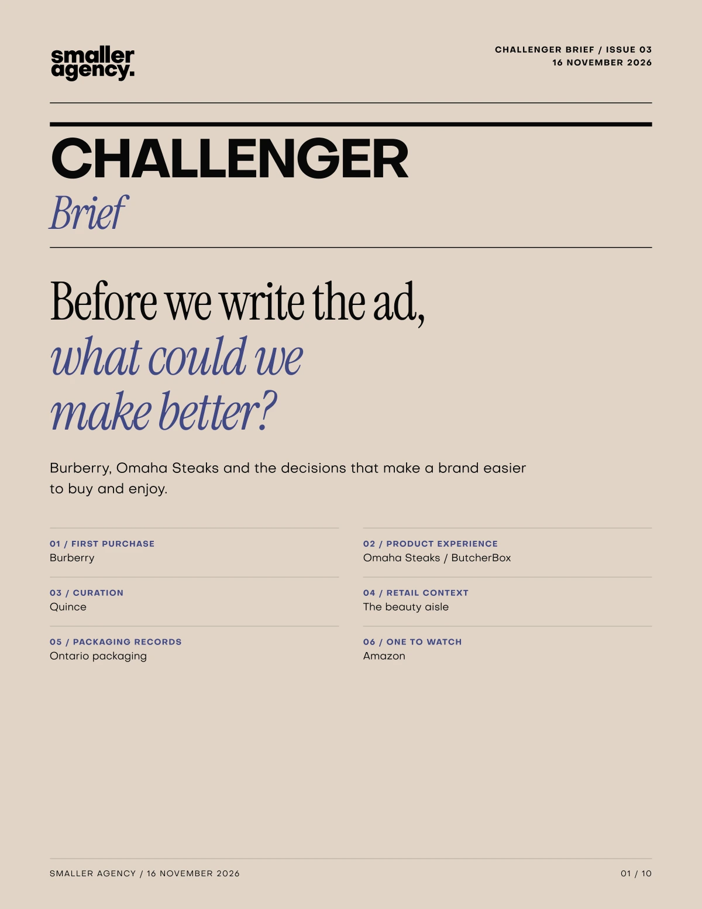

The Challenger Brief / Issue 03
Before we write the ad, what could we
make better?
Burberry, Omaha Steaks and the decisions that make a brand easier to buy and enjoy.

Burberry and Omaha Steaks probably don’t appear together in many brand presentations. This week, they’re dealing with a similar question: how do you give people something they’ll enjoy at a price they can feel good about?
I like the decisions that question leads to. You start looking at the first thing someone might buy from you, what makes the product enjoyable, and which parts of the experience you could change without losing what people came for.
Last week, Great Value had us asking why someone would pay more. This week’s stories give us a few places to look for an answer, from a first luxury purchase to a better way of sorting out dinner.
Burberry is making room for the first purchase.
Burberry’s comparable retail sales grew 4% in its second quarter, with the Americas up 11% and Greater China up 5%. Management pointed to a broader range of prices within categories, including more accessible products, as part of its appeal to younger shoppers. Reuters gives a £450 cashmere scarf and a £1,900 heritage trench as examples of the range. We’re still using “accessible” fairly generously here. Reuters, November 12 ↗
What interests me is the thought given to where a relationship starts. Someone can love a brand long before they can justify its most expensive product. A good first purchase gives them a way in and something they’re pleased to own.
For a smaller premium brand, I’d look closely at that first step. Does the entry product carry the quality and character people like about you? Will someone enjoy it enough to come back? A smaller format or a simpler product can do that beautifully, provided it feels considered in its own right.
Omaha Steaks is working on what’s for dinner.
Food Dive’s reporting this week looks at how meat brands are responding to high U.S. beef prices. Omaha Steaks introduced a top sirloin filet in April, aged for at least 35 days and tested against a USDA tenderness specification. The aim is to offer an experience closer to filet mignon at a lower price. Food Dive, November 12 ↗
That’s a useful problem to give a product team. If tenderness is a big part of what someone enjoys, can a different cut and process deliver it? You have to understand the experience well enough to know what you can change.
The same report looks at ButcherBox’s subscription pricing and ready-to-cook products. The box gives customers a more predictable purchase, although its base price did increase in February. Convenience matters alongside cost: deciding what to make for dinner is a job in itself.
I’d bring that thinking into a food brief early. What could we change about the portion, preparation or combination of ingredients while keeping the meal enjoyable? That gives us something useful to explain when it’s time to market it.
Quince is getting comfortable recommending someone else’s product.
Quince is expanding its selection of outside brands, including Therabody, Supergoop, Fellow, Staub and Cadence. The programme began with Therabody in June 2025. Modern Retail describes a selective wholesale model: Quince chooses the products and buys inventory. Cadence’s founder says its early sales there have outpaced its other retail partners. That’s encouraging, though still one brand’s early experience. Modern Retail, November 13 ↗
I like the confidence it takes to say, “Someone else already makes a really good version of this.” You can build trust by choosing well, and that trust might stretch beyond the products carrying your own name.
For a challenger choosing retail partners, I’d spend some time browsing the rest of the assortment. What does this shop seem to care about? Why would your product belong there? What might someone assume about you because of the products beside you?
There’s a lot of brand work happening in those decisions, before anyone writes the product description.
The shop around your product is part of the story.
Target and Walmart are upgrading their beauty departments, and brands are adjusting their packaging, distribution and media plans. Edgewell sees Hawaiian Tropic’s future leaning further into beauty and is exploring improvements to packaging and materials. One independent brand told Modern Retail it sends proven sellers to Target while keeping seasonal and bolder products for smaller shops. Modern Retail, November 13 ↗
It’s easy to get excited about a new retailer and leave these conversations until later. But the setting changes how someone encounters your product. They’re comparing it with different things, shopping for different reasons and giving you a different amount of attention.
I’d want the team to work through that before the packaging is finished. Which products belong in each store? What needs to be clear immediately? Which parts of the brand should feel familiar everywhere?
You can give each retailer an assortment that makes sense while keeping the whole range recognisable. It takes a few decisions up front, but it’s easier than trying to pull five slightly different versions of the brand back together later.
The packaging brief needs a spreadsheet, too.
Ontario’s packaging story is less photogenic, but worth making time for. RPRA’s consultation closed November 16 on draft Blue Box reporting and audit guidance for the 2027 cycle.
The proposed supply-reporting framework distinguishes obligated businesses with fewer than 100 Canadian employees from larger producers. It sets out six categories and the top five supplied units for smaller businesses; larger producers would use 62 categories and report between five and 50 units, with more detailed brand information and dual sign-off. These are proposals, so the final guidance may change. RPRA consultation ↗
Separately, required performance audits begin in 2027 and recur every three years. RPRA says the first will verify performance data from 2024, 2025 and 2026. That’s distinct from the proposed changes to annual supply reporting. RPRA producer guidance ↗
For a packaging project, I’d use this as a reason to get the material records organised early. Ask suppliers for component weights and details on the bottle, closure, label, coating and outer packaging. Keep that information with the design files, and check the reporting requirements that apply to the business.
Future you will appreciate knowing where it all is.
One to watch: Amazon’s very large filing cabinet.
Reuters reviewed an internal Amazon proposal for a “World Product Graph”, intended to organise information about products beyond those Amazon sells. The document carries an aspirational October 2027 date. Reuters couldn’t confirm whether it will launch, and Amazon said the document may be outdated and may not reflect current plans. Reuters, November 13 ↗
I’d keep an eye on it. In the meantime, there’s useful work in making sure people can understand your products today. Clear specifications, accurate ingredients and sensible links between variants help someone work out what they’re buying. A shopping tool needs that information too.
We can tidy up the product information while Amazon works out what it wants to build.
Where I’d start.
Pick one point where buying or using your product feels harder than it should. It might be the first purchase, choosing between sizes or getting dinner onto the table. Spend some time with that problem and the people dealing with it.
I’m always interested in what happens next. There’s often a good brand story in making something a little better for someone.